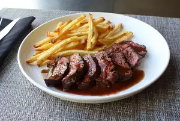

Steak

Description
Butcher (or hanger) steak is great pan cooked, broiled, or grilled.
It takes to marinades wonderfully, and really can be substituted for any cut of steak.
Just be sure to take the time to trim it well.
Ingredients
- 2 pounds butcher's steak
- salt and pepper
- butter
- 2/3 cup chicken broth
- 2 teaspoons balsamic vinegar
- 2 tablesppons cold butter, cut into cubes
Steps
- Remove all fat from steak
- Heat skillet and add butter
- Cook until browned on all sides, firm, and reddit-pink on the inside